|
CocoaPods详解之----制作篇
转载请注明出处
如果觉得文章对你有所帮助，请通过留言或关注微信公众帐号wangzzstrive来支持我，谢谢！
学会使用别人的Pods依赖库以后，你一定对创建自己的依赖库跃跃欲试，今天就来揭开Pods依赖库创建过程的神秘面纱。整个创建过程都以我实现的一个名称为WZMarqueeView跑马灯效果的view为例，步骤如下：
一、创建自己的github仓库
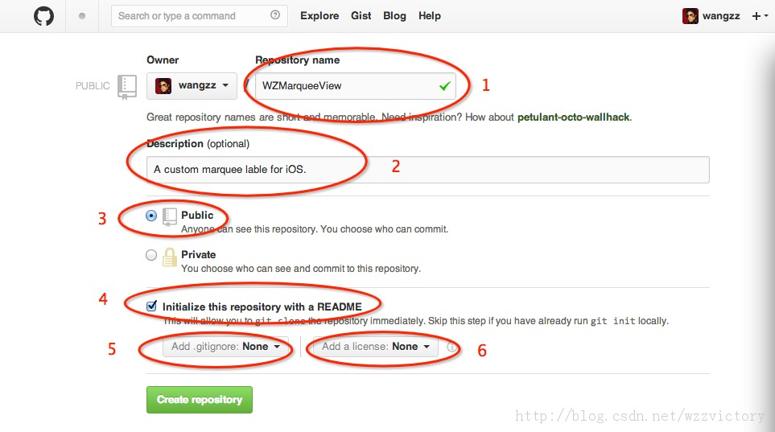
上图中标了序号的共6处，对应的说明如下：
1、Repository name
仓库名称，这里写成WZMarqueeView，必填的；
2、Description
仓库的描述信息，可选的；
3、仓库的公开性
这里只能选Public，一个是因为Private是要money的，再一个Private别人看不到还共享个毛；
4、是否创建一个默认的README文件
一个完整地仓库，都需要README说明文档，建议选上。当然不嫌麻烦的话你也可以后面再手动创建一个；
5、是否添加.gitignore文件
.gitignore文件里面记录了若干中文件类型，凡是该文件包含的文件类型，git都不会将其纳入到版本管理中。是否选择看个人需要；
6、license类型
正规的仓库都应该有一个license文件，Pods依赖库对这个文件的要求更严，是必须要有的。因此最好在这里让github创建一个，也可以自己后续再创建。我使用的license类型是MIT。
上面的各项都填写完毕后，点击Create repository按钮即可，创建成功地界面如图：
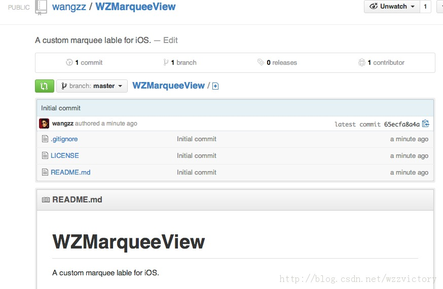
到这，仓库创建过程就结束了。
二、clone仓库到本地
为了便于向仓库中删减内容，需要先将仓库clone到本地，操作方式有多种，推荐使用命令行： 操作完成后，github上对应的文件都会拷贝到本地，目录结构为：
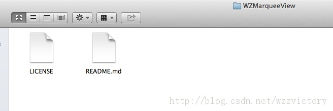
github上仓库中的.gitignore文件是以.开头的隐藏文件，因此这里只能看到两个。
后续我们的所有文件增、删、改都在这个目录下进行。
三、向本地git仓库中添加创建Pods依赖库所需文件
注意：以下描述的文件都要放在步骤二clone到本地的git仓库的根目录下面。
1、后缀为.podspec文件
该文件为Pods依赖库的描述文件，每个Pods依赖库必须有且仅有那么一个描述文件。文件名称要和我们想创建的依赖库名称保持一致，我的WZMarqueeView依赖库对应的文件名为WZMarqueeView.podspec。
1.1
podspec文件内容
WZMarqueeView.podspec的保存内容为：
- Pod::Spec.new do |s|
- s.name = "WZMarqueeView"
- s.version = "1.0.0"
- s.summary = "A marquee view used on iOS."
- s.description = <<-DESC
- It is a marquee view used on iOS, which implement by Objective-C.
- DESC
- s.homepage = "https://github.com/wangzz/WZMarqueeView"
-
- s.license = 'MIT'
- s.author = { "王中周" => "wzzvictory_tjsd@163.com" }
- s.source = { :git => "https://github.com/wangzz/WZMarqueeView.git", :tag => s.version.to_s }
-
-
- s.platform = :ios, '4.3'
-
-
- s.requires_arc = true
-
- s.source_files = 'WZMarqueeView/*'
-
-
-
-
-
- s.frameworks = 'Foundation', 'CoreGraphics', 'UIKit'
-
- end
该文件是ruby文件，里面的条目都很容易知道含义。
其中需要说明的又几个参数：
①s.license
Pods依赖库使用的license类型，大家填上自己对应的选择即可。
②s.source_files
表示源文件的路径，注意这个路径是相对podspec文件而言的。
③s.frameworks
需要用到的frameworks，不需要加.frameworks后缀。
1.2 如何创建podspec文件
大家创建自己的podspec文件可以有两个途径：
①copy我的podspec文件然后修改对应的参数，推荐使用这种方式。
②执行以下创建命令： - $ pod spec create WZMarqueeView
也会创建名为WZMarqueeView.podspec的文件。但是打开创建完的文件你就会发现里面的东西太多了，很多都是我们不需要的。
2、LICENSE文件
CocoaPods强制要求所有的Pods依赖库都必须有license文件，否则验证不会通过。license的类型有很多种，详情可以参考网站tl;dr
Legal。在创建github仓库的时候，我已经选择了MIT类型的license。
3、主类文件
创建Pods依赖库就是为了方便别人使用我们的成果，比如我想共享给大家的WZMarqueeView类，是我想提供给广大用户使用的，这个类自然是必不可少的。我把这个类包含的两个文件放到一个名称为WZMarqueeView的文件夹中，对应的目录结构如图：
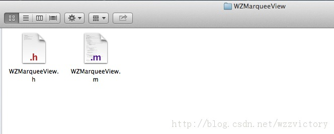
里面包含两个文件：WZMarqueeView.h和WZMarqueeView.m
4、demo工程
为了快速地教会别人使用我们的Pods依赖库，通常需要提供一个demo工程。我创建的demo工程放到了一个名为WZMarqueeViewDemo的文件夹中，该目录包含的文件如下图所示：
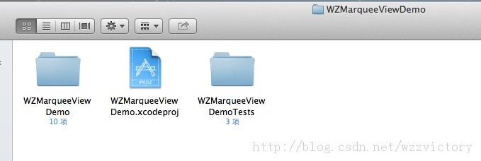
5、README.md
使用github的人应该都熟悉这个文件，它是一个成功github仓库必不可少的一部分，使用的是markdown标记语言，用于对仓库的详细说明。
以上所说的5个是创建Pods依赖库所需最基础的文件，其中1、2、3是必需的，4、5是可选但强烈推荐创建的。
添加完这些文件以后，我的github本地仓库目录就变成了下图所示的样子：
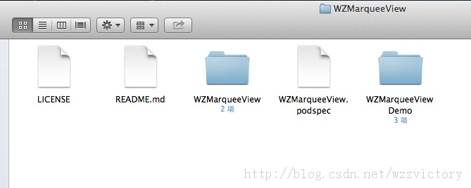
四、提交修改文件到github
经过步骤三，向本地的git仓库中添加了不少文件，现在需要将它们提交到github仓库中去。提交过程分以下几步：
1、pod验证
执行以下命令：- $ set the new version to 1.0.0
- $ set the new tag to 1.0.0
这两条命令是为pod添加版本号并打上tag。然后执行pod验证命令： 如果一切正常，这条命令执行完后会出现下面的输出：
- -> WZMarqueeView (1.0.0)
-
- ZMarqueeView passed validation.
到此，pod验证就结束了。 需要说明的是，在执行pod验证命令的时候，打印出了任何warning或者error信息，验证都会失败！如果验证出现异常，打印的信息会很详细，大家可以根据对应提示做出修改。
2、本地git仓库修改内容上传到github仓库
依次执行以下命令：- $ git add -A && git commit -m "Release 1.0.0."
- $ git tag '1.0.0'
- $ git push --tags
- $ git push origin master
上述命令均属git的范畴，这里不多述。如果一切正常，github上就应该能看到自己刚添加的内容了。如下图所示：
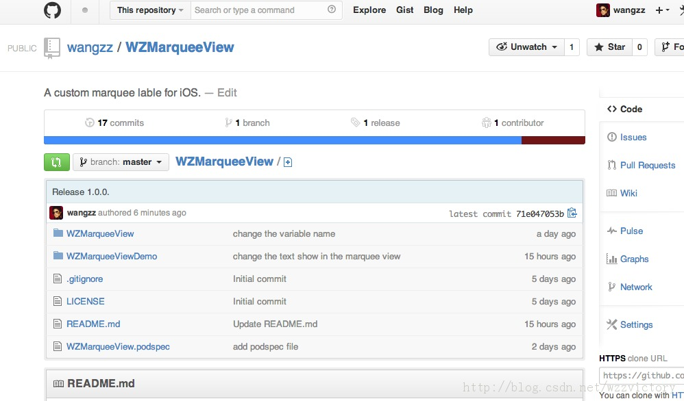
五、上传podspec文件到CocoaPods官方仓库中
经过前边的四步操作，你可能以为已经结束了，不幸的是还早着呢。
打开这个链接你就会发现，原来我们能使用的，以及我们使用pod search命令能搜索到的所有Pods依赖库都会把它们的podspec文件上传到这个仓库中，也就是说，只有将我们的podspec文件上传到这个仓库中以后，才能成为一个真正的Pods依赖库，别人才能正常使用！
按照git的规则，要想向别人的仓库中添加文件，必须先fork一份别人的仓库，做完相应地修改后，在push给仓库的原作者，等到作者审核通过，然后合并到原来的仓库中。
流程明白了以后，自然知道该怎么干了：
1、fork一份CocoaPods官方的Specs仓库
进入到刚才的官方仓库链接中，点击屏幕右上角的fork按钮，如下图：
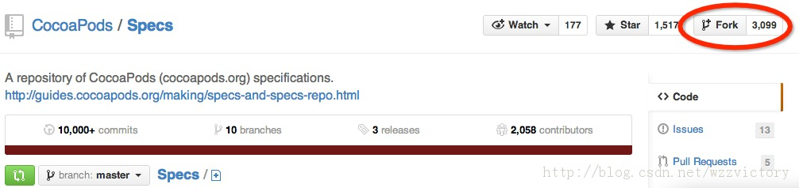
然后大家会发现自己名下会多一份仓库的分支。比如我的分支为：
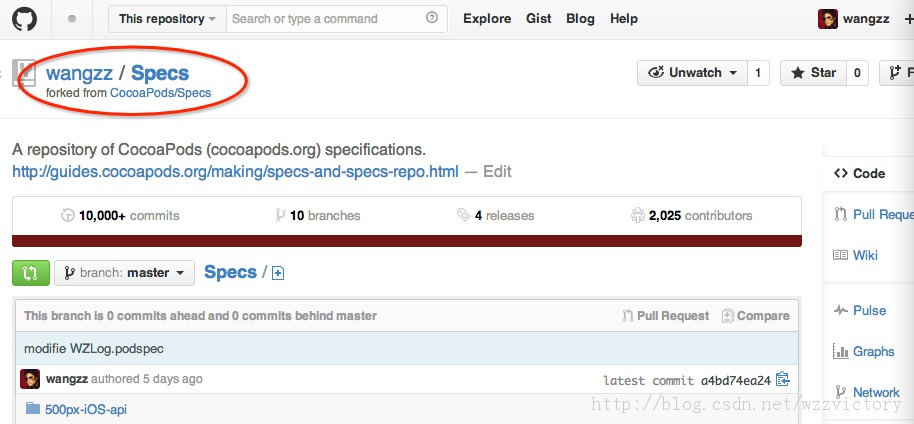
2、将fork的仓库clone到本地
执行以下命令：- $ git clone https://github.com/wangzz/Specs.git
注意， 大家需要将对应的仓库地址换成自己的。
这个仓库有点大，需要有耐心啊。
3、将自己的podspec文件添加到本地Specs仓库中
Specs仓库clone到本地后，会放到一个名为Specs的文件夹中。podspec文件在Specs仓库中的保存原则是：
Pods依赖库同名文件夹--->版本号同名文件夹--->podspec文件
照此原则，我需要在Specs文件夹下建立一个名为WZMarqueeView的文件夹，然后进入到WZMarqueeView文件夹下，建立一个名称为1.0.0的文件夹，最后进入到1.0.0这个文件夹下，并且将之前创建好的WZMarqueeView.podspec文件拷贝进来。
不难理解，如果以后有对WZMarqueeView类的升级，就在WZMarqueeView文件夹下建立对应版本名称的文件夹，用于保存对应版本的podspec文件即可。
这些操作完成后，目录层次结构如下所示：
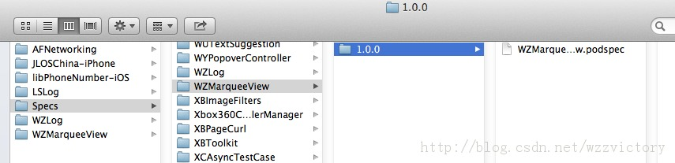
4、上传本地Specs仓库中的修改到github仓库
执行以下命令：- $ git add -A && git commit -m "Add WZMarqueeView podspec file"
- $ git push origin master
成功以后就能在github上自己fork的Specs仓库中看到刚上传的文件了。
5、将在自己fork的Specs上做的修改pull给CocoaPods官方的Specs仓库
进入到自己fork的Specs仓库中，会看到屏幕左上角有一个绿色按钮：
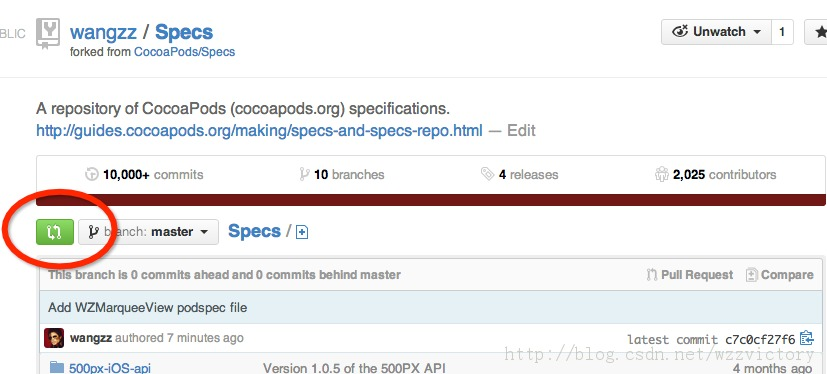
该按钮点进去以后会有如下图所示的界面：
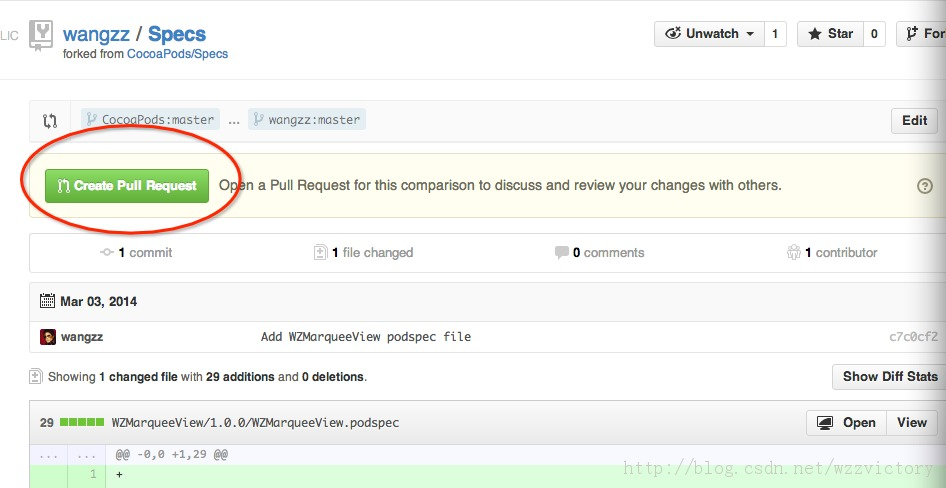
点击图中的绿色Create
Pull Request按钮，即可将我们fork的Specs上做的修改pull给CocoaPods官方的Specs仓库。
到这一步后，剩下的工作就只有等了，等待CocoaPods的维护人员审核并将我们pull上去的修改合并到官方的Specs仓库中，这个过程通常会有一天左右的等待时间。如果有任何消息，比如审核不通过，或者审核通过了，CocoaPods官方都会发邮件通知的。
等到审核通过的时候，我们就能在官方的Specs仓库中看到自己上传的文件夹了。
6、查看审核进度
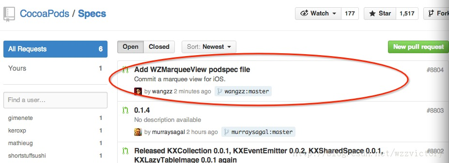
红圈标识的就是我刚才pull上来的请求，点进去以后就能看到对应的审核进度。
六、查看我们自己创建的Pods依赖库
如果收到了CocoaPods官方发过来的审核通过邮件以后，你可能很着急的想在自己的电脑上执行pod
search命令，看看能不能搜索到自己创建的Pods依赖库。不过你肯定会失望的，因为还需要执行一条命令才能在我们的本地电脑上使用search命令搜索到我们的依赖库：在我的CocoaPods系列教程中的第一篇： CocoaPods详解之----进阶篇中的最后部分介绍过这条命令，它会将所有的Pods依赖库tree跟新到本地。执行完这条命令，再去执行: - $ pod search WZMarqueeView
就能显示出对应的介绍信息了！
说了那么多，到这里整个Pods依赖库创建过程才算真正结束！小伙伴们，你成功了吗？？？遇到问题还请留言。
七、参考文档
|